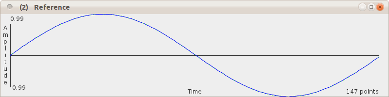
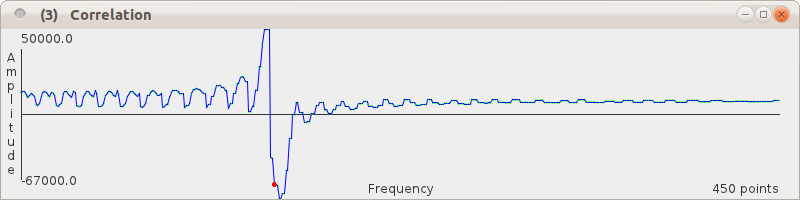

Introduction
This write-up is rough & ready, mostly I wanted notes for myself, offboard memory. But however incoherent, hopefully it contains enough information to explain how this thing works.
There is some digital signal processing jargon, but DSP can just be treated as black-box stuff, there's really no need to go into the detailed maths to build things. (It's been years since I studied this stuff and my maths is totally rusted, the revision I did for this was basically skimming the corresponding Wikipedia articles).
Design Considerations
The original idea was to encode HTTP URLs as little tunes, with the characters in URLs somehow mapping to musical notes. It's essentially the same idea as used in touch-tone phone signals, but tweaked to make the beeps easier on the ear.
Text Pre-Processing
International coverage (i.e. IRIs) is fairly essential, which basically means supporting Unicode. Because of this it was decided not to include any optimisations or other special features for URLs, and simply support arbitrary text. Unicode contains a lot of characters, and mapping from these to musical pitches directly is almost certainly unfeasible. However Punycode is an encoding syntax by which a string of Unicode characters can be transformed uniquely and reversibly into a much smaller character set. Basically it's a mapping to ASCII. Roughly speaking, characters that can be expressed in ASCII are expressed that way, but multiple ASCII characters are used to represent other individual Unicode characters. In general, the cost of reducing the size of the character set is an increase in the resulting string length.
Phonic Constraints
To achieve a reasonable compromise between length of (beep) messages, musicality and implementation complexity, it was decided that a maximum of two concurrent tones (one bass, one treble) was probably most suitable. By restricting these to a pentatonic scale, arbitrary combinations of notes could be used without major dissonance. Another consideration was that generic hardware should be able to transmit and receive the beeps, so a range of pitches was chosen that should be suitable for common acoustic transducers, i.e. nothing too low or too high (approx. 250-1500Hz, which is around female speech range and a bit higher, or an extended soprano singer). The restriction to the notes of the pentatonic scale (i.e. 5 per octave) meant a little more space for data was desirable, so the treble notes may appear as half- or whole-length.
This may give the impression a lot of planning went into this aspect : not really, most decisions were made during experimentation, based on what sounded about right.
Encoding
Generating Web Beeps is relatively straightforward, details of the requirements can be found in the specification, there's an example of how this may be implemented in Java in the source code.
Decoding
Getting the text back out from the beeps is rather more convoluted (literally!), though is based on standard digital signal processing (DSP) techniques.
Pre-processing
Normalisation (before & after chunking)
Filtering (before & after chunking)
reduce harmonic distorion artifacts and out-of-band noise
Although some
Pitch Detection
Many pitch detection algorithms are available, here are some examples ranked in order of guesstimated suitability:
- Cross-correlation (against reference waves) : should be the most accurate and efficient
- Pisarenko decomposition : can take advantage of prior knowledge (there are max 2 tones)
- FFT : brute force, computationally expensive (lots of irrelevant cross-correlation) but very well known and easy to see what's going on
- Bandpass filters (one per note) : could maybe be good, as a variation of 1, need to figure out what to convolve
- Zero-crossing detection/timing : likely to be unreliable
Performance shouldn't really be a problem on a PC-like machine or even a smartphone, though experimentation needed. For accuracy it'd be nice to have (say) 3 parallel decoding algorithms going, let them vote for the best match.
Reference Implementation
The reference implementation has been written in Java.
The decoder was initially developed using FFT pitch detection - a suitable FFT class was easily found online (a port of a C version), then a cross-correlation approach was tried.
FFT Detection
plus peak detection
timing
Cross-Correlation
The second approach to pitch detection I tried was cross-correlation, the idea being to have reference tones corresponding to all the note frequencies that are likely to be present, and comparing each of these with a given chunk in the Web Beep. Intuitively, this should rock - it's totally targetted and so should be very accurate and efficient.
Correlation is essentially comparing two signals point-by-point. The only problem with that for the current problem is that the phase may vary. Cross-correlation addresses this by sliding the values of one signal against another and doing comparisons for each step. I'm sure plenty of libraries exist for this, but none jumped out at me and the principle seems simple enough, so I hacked it.
As a trial I started with a sampled sinewave signal (aka Test Tone) of known frequency (300Hz) with enough cycles (23?) that the frequency should be pretty obvious.

I then set up the code to generate a load of reference waveforms, a series that I knew would include the Test Tone frequency - I went from half it's frequency to double it, in steps of 1Hz.

The code that did the comparisons is a loop within a loop, moving the starting point of the reference through the Test Tone, for each signal/reference comparison the reference values being shunted along as many times as necessary to cover the whole test tone (to give the same effect as calculating a reference signal of the same length as the Test Tone - this way might be marginally quicker).
Assuming I've understood cross-correlation correctly, the comparisons are simply point-by-point multiplications. These are summed for each reference frequency across all steps through the Test Tone. This produced a result as below. As well as a bit of low amplitude oscillation, in the middle there's a big peak followed by a big trough.

Pulling out the values (rounded here), the top of the peak corresponds to 294Hz, the bottom of the trough 304Hz. Taking the mean of these gives a value of 299Hz, not a bad estimate for the target frequency of 300Hz - it's about 0.33% out.
This is a brilliant result, only not the one called for by this application. I don't want to have to sweep through reference tones in 1Hz steps, I want to give it just a handful of known reference frequencies (e.g. the note A at 440HZ) and see if they're present or not.
So I pulled out the point corresponding to the target frequency (it's the red dot on the plot above), here it is compared with the "visible" values:
peak point : (294, 50000)
trough point : (304, -67000)
target freq point : (300, -57000)
mean of abs(y) values : 4900
- so the point corresponding to the frequency in question does seem to be significantly away from the background noise. It's a bit worrying that it's close to a zero-crossing point, but this seems promising enough to glue together the rest of the pitch detection implementation and see how well it behaves with some real data.
Test Results
Notes
Applications
As a kind of QR Code for the ear, Web Beeps should be useful in a lot of places. Suggestions please...
Ring Tone - use your email, Home Page or personal URI.
Patent Pending?
No. Software patents hurt innovation.
In any case, I'm sure many variations of this have been done before, though it's hard to find out what there is. Searches I've tried mostly led to something related to mobile/cellphone ringtones (grr, I wanted the name "Web Tone" but it's already taken).
The basic idea is fairly trivial: what if you had something like DTFM tones only not so hard on the ear? Given that, implementations are pretty obvious given minimal background knowledge of character encoding, music and DSP. Simple matter of guesswork, experimentation & banging out the code. The implementation described here is pretty arbitrary, mostly based on what seemed like a good idea at the time.
(c) Danny Ayers
This work is licensed for reuse
Creative
Commons